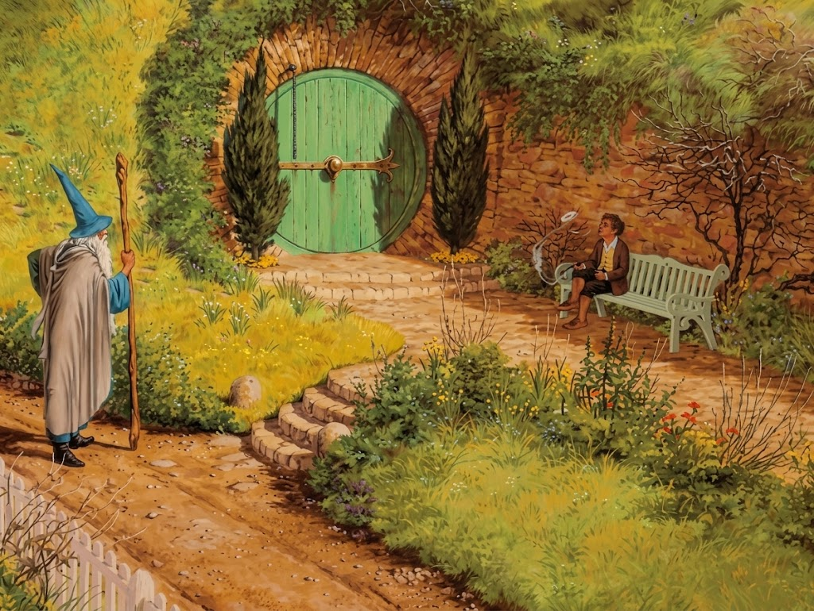

Once Upon a Page
Once Upon a Page

An Unexpected Visitor

Bilbo Baggins is a hobbit, a small, beardless creature with hairy feet who is quite sociable and loves the comforts of home. His mother was a member of the Took family, who are considered a little irregular because they were rumored to have intermarried with a fairy and because they love adventure. Bilbo himself is very well off and fond of food and clothes. His house is a beautifully furnished hole in the ground.
Bilbo Baggins greets a passer-by, not recognizing him as Gandalf the wizard. Gandalf tells Bilbo that he is looking for someone to share an adventure with, but Bilbo firmly declines the invitation even after Gandalf reveals his identity to Bilbo and reminds him of Gandalf's longtime friendship with the Took family. Bilbo invites him to tea the next day; Gandalf makes a strange mark on the outside of Bilbo's front door and leaves.
The next day, Gandalf and thirteen dwarves — Dwalin, Balin, Kili, Fili, Dori, Nori, Ori, Oin, Gloin, Bifur, Bofur, Bombur, and Thorin — visit Bilbo and make themselves at home. They demand refreshments, and while they eat, they talk, smoke, sing, and play musical instruments.
The dwarves sing of seeking a treasure that lies buried under a mountain guarded by a dragon. Thorin, their leader, addresses the group, including Bilbo, whom he calls a fellow conspirator, reminding them that they are embarking the next day on a journey from which they may not return. Bilbo, who had not planned to join the group, becomes frightened and falls into a fit. When he comes to, he learns that Gandalf had advertised his services as a burglar — the meaning of the secret mark on the door — hoping that the dwarves would recruit him. Bilbo agrees to go on the journey, partly out of pride, because the dwarves are skeptical of his ability.
Gandalf takes out a map made by Thor, Thorin's grandfather, that shows where the treasure is hidden. He points to a secret entrance marked on the map and gives Thorin the key to it. Thorin tells the story of his ancestors, who lived in great wealth under the Mountain near Dale until Smaug the dragon invaded Dale and took control of the treasure of the Mountain. Bilbo asks about the business details of the adventure. They go to bed with plans for an early start the next morning.